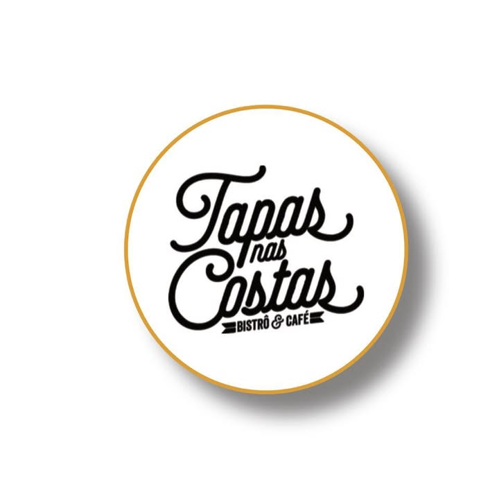
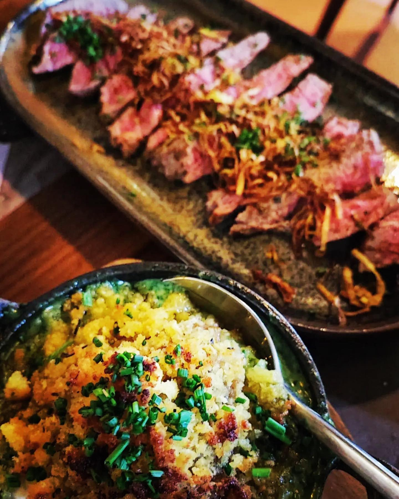
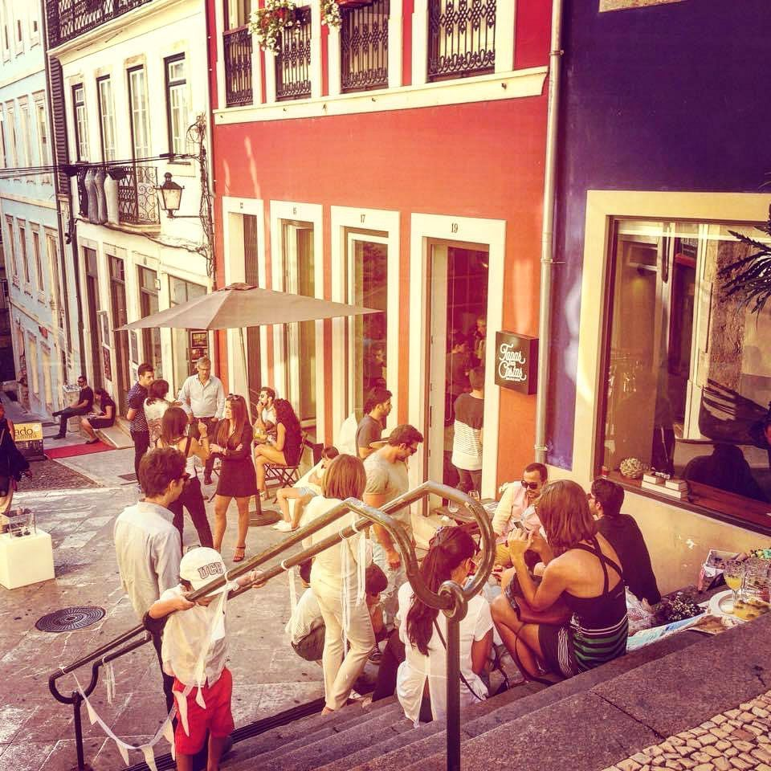
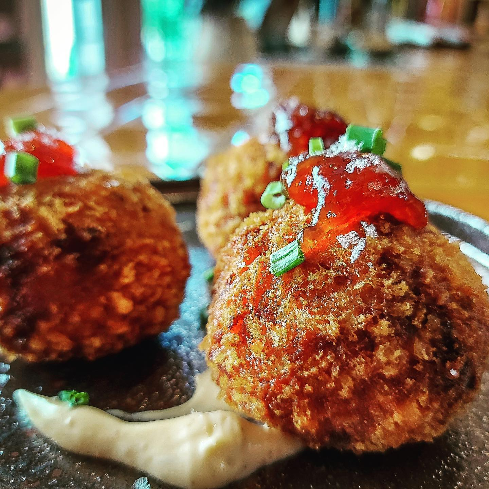
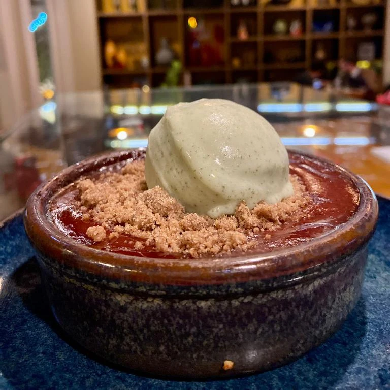
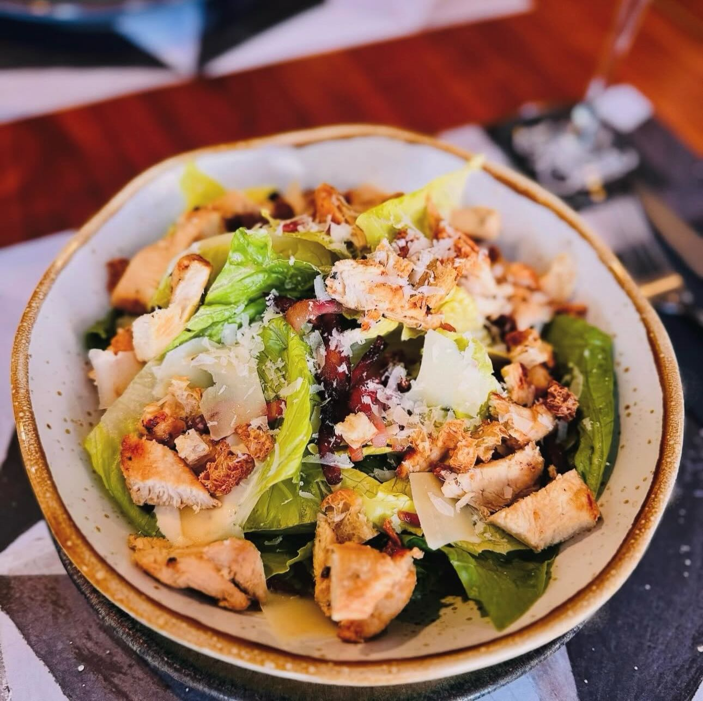
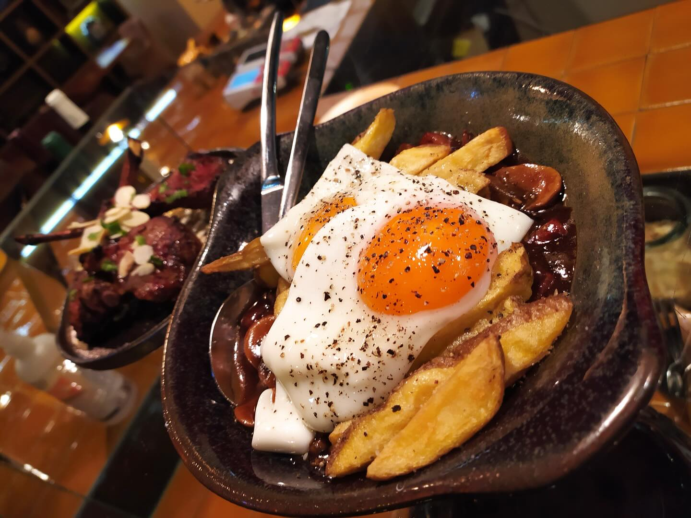

01
Para começar
Pão, azeite e pequenas tentações para abrir o apetite.
Ver sugestões ↗
Tapas nas Costas Reservar mesa ↗Baixa de Coimbra · Desde 2014
Tapas portuguesas com um toque de surpresa, servidas num dos cantos mais bonitos e históricos de Coimbra.

Uma sangria fresca, guacamole para partilhar e tempo para ficar. É este o ritmo das noites nas Costas.
Vem brindar connosco ↗No coração da Baixa, entre a pedra antiga e o movimento da cidade, criámos um lugar para abrandar.
Nas Costas, a cozinha portuguesa encontra a vontade de experimentar. Há pratos para dividir, copos para brindar e aquela sensação rara de estar exatamente onde se devia estar.
Conhecer a nossa história ↗
A nossa casaHá lugares que se visitam. E há lugares a que se volta.
Pedra com história
Um espaço íntimo, acolhedor e cheio de detalhes.
Pratos com conversa
Para provar devagar, pedir mais um e passar à sobremesa.
Coimbra à porta
No percurso entre a Universidade e a Baixa, no centro de tudo.






Um dos nossos sítios favoritos em Coimbra. A comida é incrível e o ambiente faz-nos sentir em casa.
Quer seja um jantar a dois, uma mesa cheia de amigos ou uma pausa no passeio pela cidade.
Para reservas de última hora, ligue-nos diretamente. Respondemos com prazer.
Ou reservar pelo WhatsAppNormalmente respondemos em poucos minutos.Recomendamos reserva, especialmente ao jantar e ao fim de semana. Para reservas no próprio dia, ligue-nos ou envie mensagem pelo WhatsApp.
Sim. Temos opções vegetarianas e vegan que variam conforme os ingredientes disponíveis.
Estamos na Rua Quebra Costas 19, na Baixa de Coimbra, entre a Universidade e o rio.
Claro. Fale connosco para encontrarmos a melhor solução para o seu grupo.